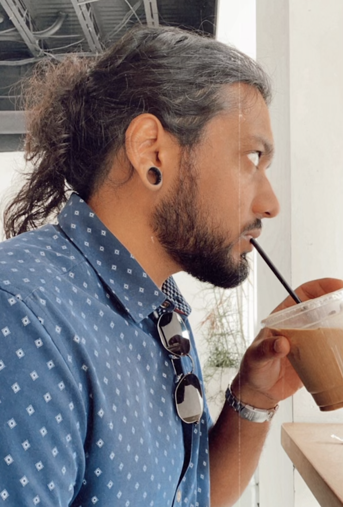

About Me
My name is Erik, a healthcare professional and aspiring web developer. I am striving to use my HTML, CSS, and JavaScript skills to create solutions to the many challenges we face in today's health environment by meshing my analytics background, interest in UI design, and dedication to helping others.

11+
Years in Healthcare
5+
Years in Analytic Solutions
2+
Years in Clinic Operations
6+
Months in Web Development